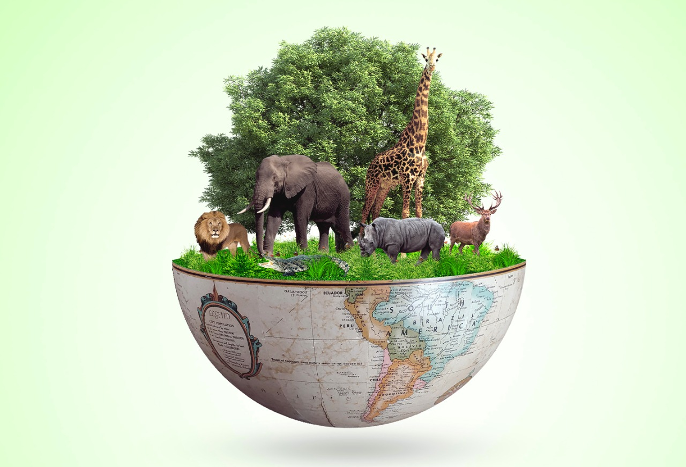
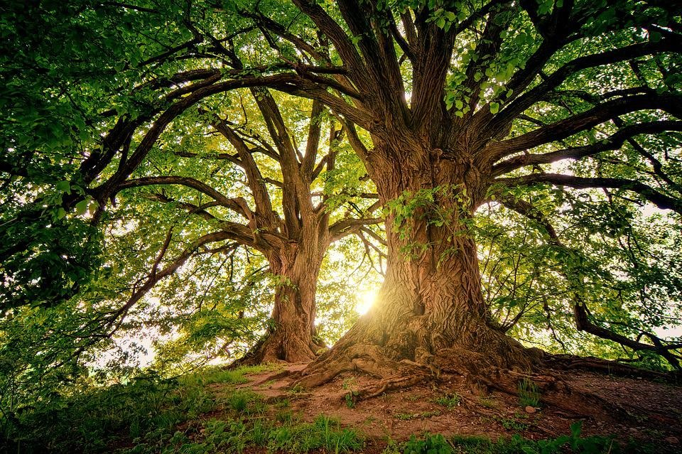
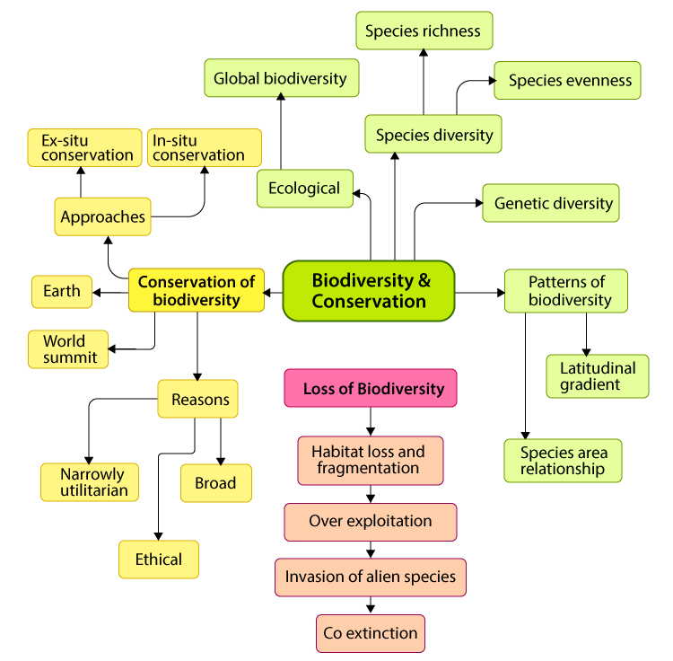
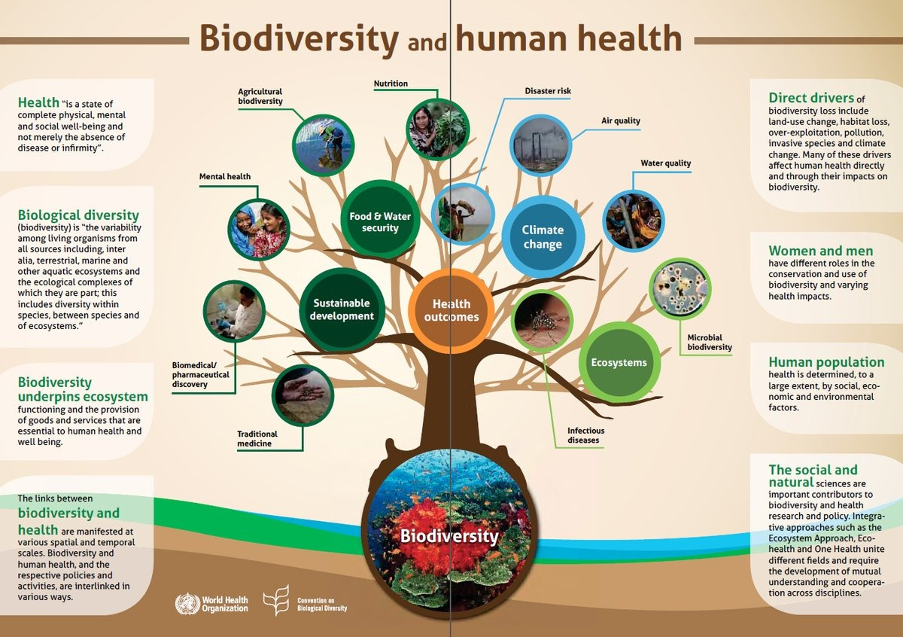
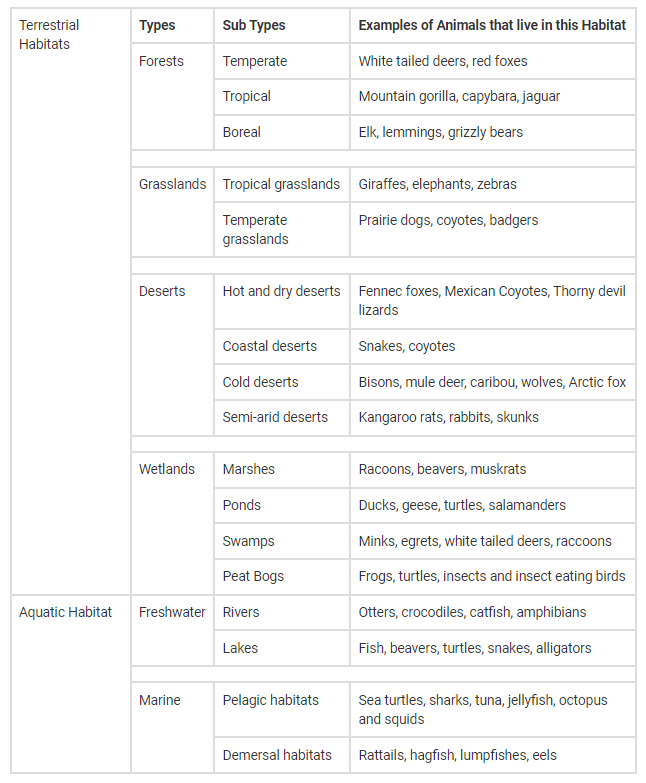
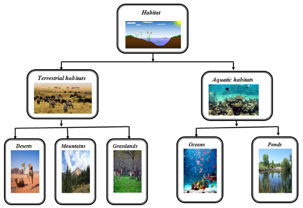
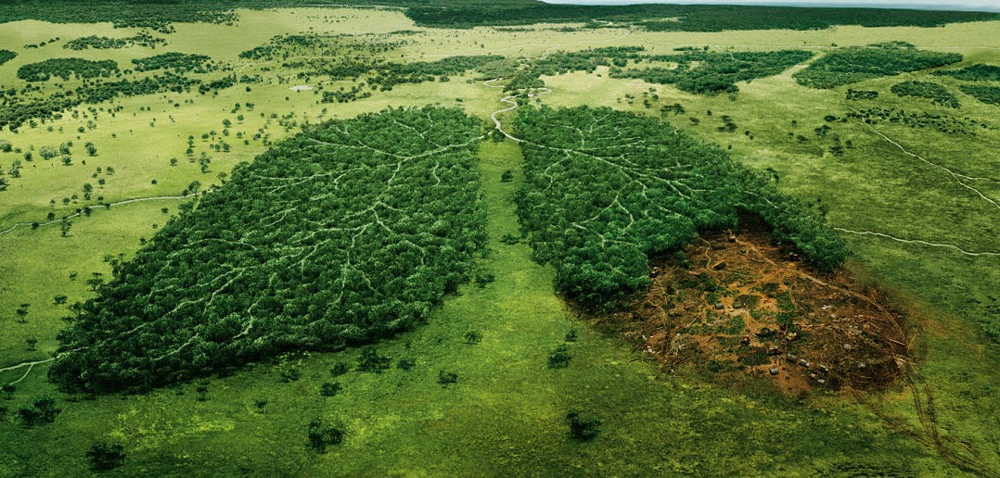
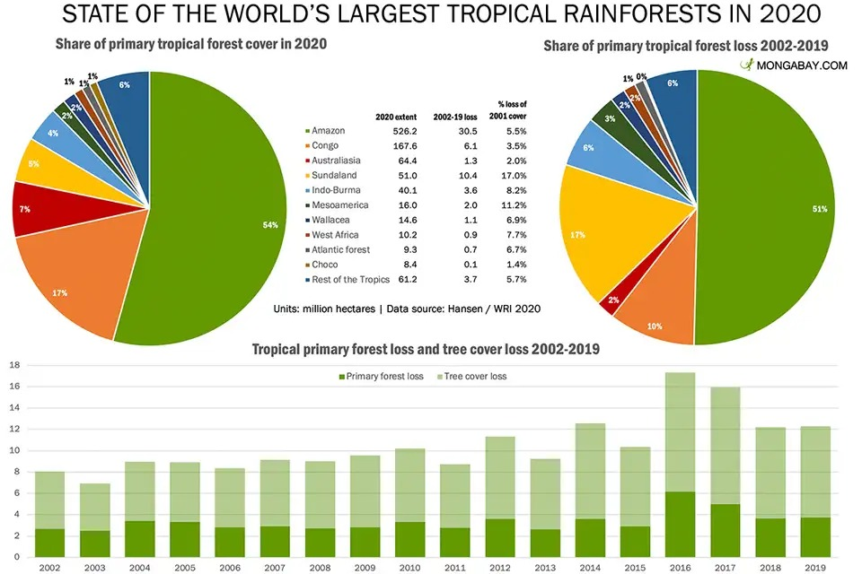
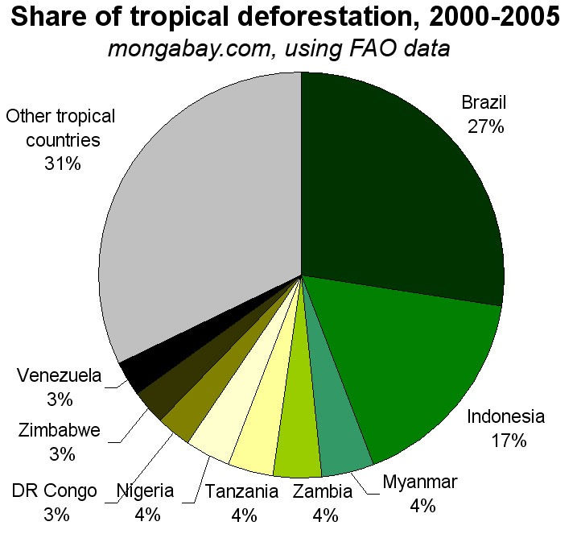
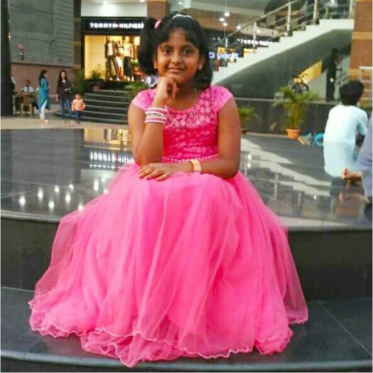

Protect Biodiversity
Protect Biodiversity
&
Natural Habitats
Importance of Biodiversity and Natural Habitat

Biodiversity is all the different kinds of life we will find in one area: the variety of animals, plants, fungi, and even microorganisms like bacteria that make up our natural world. Each of these species and organisms work together in ecosystems, like an intricate web, to maintain balance and support life.
Biodiversity is essential for the processes that support all life on Earth, including humans. Without a wide range of animals, plants and microorganisms, we cannot have the healthy ecosystems that we rely on to provide us with the air we breathe and the food we eat. And people also value nature of itself.
Natural habitats include land and water areas characterised by certain environmental conditions, and by the plant and animal species typical of such areas. Natural habitats are affected by soil and bedrock, water conditions and the microclimate, among others.
Trees and Plants
82% (390900 species)Endangered Animals
38% (16298 species)Extinct Animals
90% (900 species)Natural Habitat destroyed by Humans
60%Fewer than 10
Vaquita left
67
Javan Rhinoceros left
92
Irrawaddy Dolphins left
1063
Mountain Gorillas left
1864
Giant Pandas left
2300
Leatherback Turtles left
3000
Sea Otters left
3900
Tigers left
4080 - 6590
Snow Leopards left
Fewer than 25000
Blue Whales left
20000 - 40000
Asian Elephants left
55000 - 65000
Orangutans left





Environmental Issues
Increase an area's vulnerability to Natural Disasters!

Loss of many valuable Ecosystem Services and contributed tremendously to Global Climate Change!

Substantial diminishing of Earth's ability to Produce Oxygen and to Use Up Carbon Dioxide!

Protection and Conservation of Biodiversity and Natural Habitats
Government Legislation
Governments have the power to control what is done to the habitats within their country. Legislation that protects natural habitats by outlawing development, harvesting of natural resources, or other human exploitation has a huge impact on maintaining natural biodiversity.
Additionally, laws protecting specific species like the Wildlife Protection Act helps protect animals that have already been impacted.
Protecting habitats before they have been altered is the best form on biodiversity conservation and is most successfully implemented by government regulations.
For Reference: Click Here
Nature preserves
Nature preserves are a form of government regulation and are often known as National Parks. They protect a region and the organisms that live there from certain forms of development and provide access for people to visit them. This is excellent because it protects the natural habitat and is a place where people can view the ecosystem.
The goal is that over time this helps people have more respect for the natural world and increases pressure on government to further protect other areas.
Currently 12 percent of earth's surface is covered by nature preserves.
For Reference: Click Here
Reducing Amount of Invasive Species
Invasive species are sometimes introduced to an area on purpose, but also sometimes by accident. To limit the number of invasive species moved by accident planes, ships, and cargo must be thoroughly checked before it is offloaded in a new country.
Additionally, people should not bring new species of animals or plants to an area without consulting ecologists knowledgeable on the region.
Habitat Restoration
After an area is damaged by human impacts we can try to return it to its natural state. This means bringing back the plants and animals that are naturally found there. This has been shown to be a promising way of returning biodiversity to a region.
One example of this is the reintroduction of wolves into Yellowstone National Park. When wolves returned to the region they ate more elk and coyote, which increased the prey species of the coyote and let riparian (river bank) areas trampled by elk recover.
These restoration projects can be undertaken by governments, local organizations, or NGOs.
For Refernce: Click Here
For Refernce: Click Here
Captive Breeding and Seed Banks
Captive breeding is when animals in captivity (often at zoos) are bred. This is seen as somewhat controversial, as it requires the capture of animals that are often near extinction. On the positive side it provides the opportunity to increase the population of the species, so they can be reintroduced into the wild.
Seed banks are areas where huge varieties of plant seeds are stored. This provides a failsafe if a species goes extinct in nature. The plant can be grown from a saved seed and reintroduced back into its habitat.
This is a very real issue and seed banks have been collecting samples for many years, with some seed banks having over 2 billion seeds stored at a time.
For Reference: Click Here
Research
Understanding how species interact within their environment is crucial to protecting them. As humans further understand species interaction we find new and more direct ways to help protect organisms and maintain biodiversity.
One example is the use of wildlife corridors in urbanized areas. By researching many different species we have found that this dramatically increase their populations [9]. It reduces the number of animals that come into direct contact with humans and provides areas for migratory animals to move long distances.
For Reference: Click Here
Reduce Climate Change
As we know, climate change has disastrous consequences for all living things on earth. We use huge amounts of fossil fuels, which directly cause climate change.
We need to move away from fossil fuels and towards alternative energy sources and natural or sustainable products. Reducing the effects of climate change requires a worldwide effort.
For Reference: Click Here
Purchase Sustainable Products
Many protects are now labeled with ecolabels that state if they are environmentally friendly. Some of the most prominent ecolabels are Energy Star, USDA Organic, and Rainforest Alliance Certified.
Our consumption of natural resources is one of the main reasons for biodiversity loss, so it is our responsibility to consume products that are produced in the most sustainable way possible.
Additionally, when we consume these goods it increases demand for environmentally conscious products pushing more producers to make them.
For Refernce: Click Here
For Refernce: Click Here
Sustainable Living
Sustainable living is something that we can each choose to do on a daily basis. Whether it be by taking shorter showers, riding a bike to work, or buying ecolabeled products it helps reduce the amount of resources we use.
This is arguably the most important way of protecting biodiversity because everyone can do it, often with only small lifestyle changes. If everyone chose to live sustainably, biodiversity in a variety habitats would improve.
For Reference: Click Here
Education
As with most environmental topics, education is one of the keys to success. Educating people about the importance of biodiversity conservation increases public awareness of the issue. As public awareness increases people become more involved and eventually influence their government representatives, pushing for more environmental protection.
Government legislation protecting our natural environments is one of the most effective ways of protecting biodiversity.
For Reference: Click Here
Science and Technology
Currently science and technology are two of the most important tools in conservation biology.
We use science, and specifically ecology, to understand the web of interactions in our biomes. By understanding these interactions scientists are able to pinpoint the key species in ecosystems. This information is used to guide conservation efforts. It is also used to understand pollution and its cascading effects within an ecosystem. Bio-magnification of toxins in a food chain can cause huge problems for top predators. This is an ever adapting field of science and these two examples are just a few ways to implement the information it uncovers.
Technology is becoming more and more important in conservation biology. Sustainable technologies, like renewable energies, biodegradable packaging, and recycling, help reduce our impact on the environment. Additionally, technologies like cloning give scientists the ability to bring back species that are already considered extinct.
For Reference: Click Here
Case Studies





Get In Touch
Rituparna Das

Please free feel to contact me on my GMail ID: rituparna.india1947@gmail.com